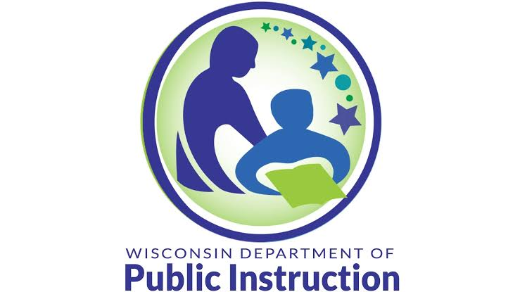

Christian Marowski

Indiana UniversityM.S. in Computer Science
August 2025 – May 2027
Marquette UniversityB.S. in Computer Science and Cognitive Science
December 2024
About Me
I'm a master's student in Computer Science at Indiana University, where I work in the SMART Lab on multi-robot coordination. My interests include classical and learning-based control, graph neural networks, and multi-agent reinforcement learning for cooperative robot systems.
Affiliations
 Luddy Autonomous Racing Team (LART)
November 2025 – Present
Luddy Autonomous Racing Team (LART)
November 2025 – Present

Wisconsin DPI August 2025 – January 2026Research
Preprint
arXiv preprint, arXiv:2610.22670. Submitted to the IEEE International Conference on Robotics and Automation (ICRA 2027).
A Comparative State-Level Analysis of Computer Science Teacher Capacity in Georgia and Wisconsin Public High Schools
55th IEEE Frontiers in Education Conference (FIE).
More of my work, with videos, is on the Projects page.